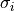
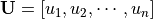
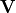
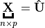

8. Dimension Reduction Algorithms¶
8.1. What is dimension reduction?¶
In machine learning and statistics, dimensionality reduction or dimension reduction is the process of reducing the number of random variables under consideration, via obtaining a set “uncorrelated” principle variables. It can be divided into feature selection and feature extraction. https://en.wikipedia.org/wiki/Dimensionality_reduction
8.2. Singular Value Decomposition (SVD)¶
At here, I will recall the three types of the SVD method, since some authors confused the definitions of these SVD method. SVD method is important for the the dimension reduction algorithms, such as Truncated Singular Value Decomposition (tSVD) can be used to do the dimension reduction directly, and the Full Rank Singular Value Decomposition (SVD) can be applied to do Principal Component Analysis (PCA), since PCA is a specific case of SVD.
- Full Rank Singular Value Decomposition (SVD)
Suppose
, then
is called a full rank SVD of
and
- – Sigular calues and
– left singular vectors,  and
is unitary.
– right singular vectors,
and  is unitary.

Singular Value Decomposition


- Reduced Singular Value Decomposition (rSVD)
Suppose
, then
is called a Reduced Singular Value Decomposition rSVD of
and
- – Sigular calues and
is column-orthonormal matrix.
is column-orthonormal matrix.


- Truncated Singular Value Decomposition (tSVD)
Suppose
, then
(1)¶
is called a Truncated Singular Value Decomposition tSVD of
- – Sigular calues and
is column-orthonormal matrix.

Truncated Singular Value Decomposition


Figure Truncated Singular Value Decomposition indictes that the the dimension of  is smaller than . We can use this property to do the dimension reduction. But, usually, we will use SVD
to compute the Principal Components. We will learn more details in next section.
is smaller than . We can use this property to do the dimension reduction. But, usually, we will use SVD
to compute the Principal Components. We will learn more details in next section.
8.3. Principal Component Analysis (PCA)¶
Usually, there are two ways to implement the PCA. Principal Component Analysis (PCA) is a specific case of SVD.
(2)¶
8.4. Independent Component Analysis (ICA)¶
8.5. Nonnegative matrix factorization (NMF)¶
TO DO……